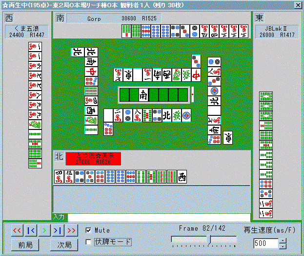
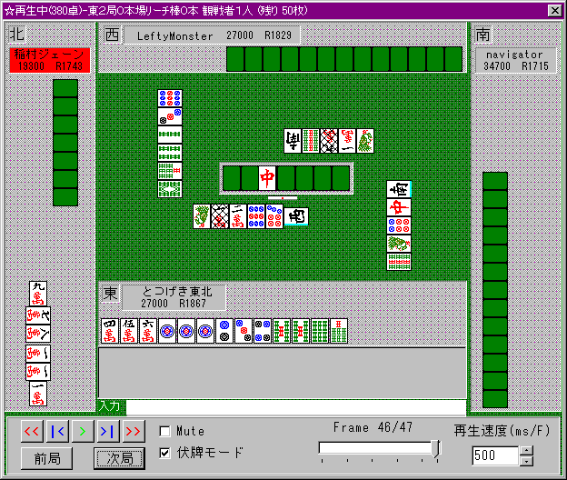

★☆ラグに関する読み２☆★
2000/4/22 み〜な
２．フリテンを見破る
では次にラグを使ってフリテンリーチを見破る方法を見ていきましょう。
なお、東風荘では”ロンのラグを切ることができない”
ので、下記に説明することはとても有効です。
もしフリテンリーチを見破ることができたら・・・。
そうですね。
こちらは相手のリーチに対してまったく気にせずに打牌できるわけです。(笑)
ですのでフリテンリーチを見破ることはとても重要だということですね。
☆フリテンリーチの見破り方☆
一言でいうと。
”ポンの可能性のない牌をリーチ者の上家が切った時にラグが起こる”
です。
上家が切った牌でラグが起こるというのはチーのラグ
もしくはポンのラグですね。
ですがこの場合はリーチ！です。
そう。チーは絶対にありえないわけですね。 ではポンがないとすると
どういうラグか？
そうです。ロンのラグですね。
（ちなみにこれは余談ですが。 下家にリーチされた時に自分が切った牌で
ラグが発生したらまずロンだと思って諦めてください。(笑)
その牌でロンが掛からないのは他家がその牌を２枚もしくは
３枚持ってる時だけです。
ここからリーチ者以外の手を推測することも可能です）
では何故ロンが掛からないのでしょうか？
フリテンなのでロンできないからですね。
では実際に見ていきましょう。

今度は手牌を開けてみました。
東風戦、平場での親リーが掛かったところです。
ワンチャンスの８ｐを勝負してもいいのですが親の捨て牌が
変則的だったのでとりあえず１発を警戒して７ｐを切りました。
すると・・・？ あら。 ラグが掛かりましたね。
見てのとおり下家のリーチなのでチーはありません。
残るポンラグですが・・・見てのとおり７ｐ３枚見えてますね。
よってこの時点でフリテン確定！(爆)です♪
親リー無視してガンガン無筋切ってＯＫなのです！(爆)
結果、この局は
(他家は気付いてませんでしたね。つうかチャットで「強いねぇ」
って言われましたよ 笑)
ドラを通しつつテンパイにもって行くことができました。
他家はありえないロンを恐れての降りでノーテンでした。(笑)
どうです？ラグひとつに気を使ってみると結構変わるでしょう？(笑)
この場合は他家が降りたからよかったのですが
他家も気付いた場合(ってか気付かなきゃダメ！)
そちらの追っかけやダマに留意するようにしましょう。
フリテンリーチに降りさされるのって一番もったいないです。(笑)
とつより：
ラグは東風荘が「実戦と違う」最大の部分かもしれない。
だけどシステムがこうである以上、これを最大限に利用するのが当然であって、「麻雀の繊細な読み合いがなくなる」なんてことは決してない(笑)。
誰かのリーチ後に ７ でラグがかかったとすると、「３枚壁」で８や９が切りやすくなる・・・といった具合に利用できる。
み〜ながラグについて頑張って書いてくれているので、ラグを積極的に利用して成功した局があるので自慢さしてくれ(笑)。

ドラも見えてなくて、上家が染め手。
親とは言えクソ手で、普段ならピンフのダマに持ち込むところだったが、トイメンの９ソウ切りでラグがかかったんよ〜。
で、上家が７ソウ手出し(ﾟｰﾟ*)｡･:*:･ﾎﾟﾜｧｧﾝ
君、さては７８ソウ落としするつもりやね(￣ー￣)
そこでツモ切りリーチかけてねらい打ち( ≧∇≦)ﾌﾞﾊﾊﾊ!
しっかり一発で出して、ついでに裏１も載った瞬間の画像です ぎゃあっはっはっはははは・・・